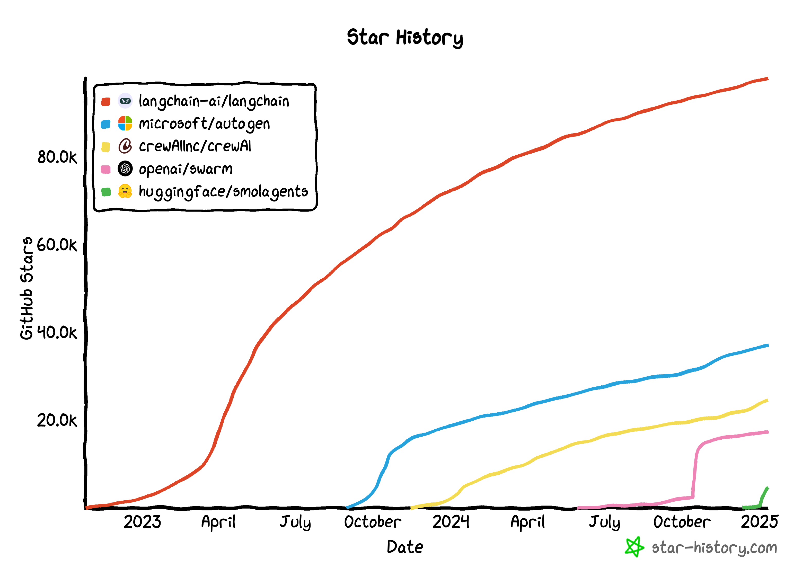

Read
Foundational readings:
- (a16z) RIP to RPA: The Rise of Intelligent Automation

- (A16z) The Messy Inbox Problem: Wedge Strategies in AI Apps
- (Foundation Capital) AI leads a service-as-software paradigm shift
- (NFX) The AI Workforce is Here: The Rise of a New Labor Market
How-to
How to build an agent:
- Identify what to automate
- Choose Framework / No-code tool / Vertical platform
- Define evals
- Build the agent
- Observe what the agent is doing
- Deploy the agent
- Monitor towards the evals
Frameworks
Agent frameworks:
- Langchain
- Autogen (Microsoft)
- CrewAI
- Swarm (OpenAI)
- Smolagents
Code agent frameworks:
- Smolagents
- Agentscript

What does an Agent framework do:
- Use programmatically (FastAPI)
- Enable multi-user and multi-agent (API designs)
- Don't interfere with main server process (Execution sandbox)
- Actually persist and don't disappear when the script finishes (Real database)
- Properly scale the agent server (ORM)
- Use local LLMs which have less reliable function calling (Extra middleware code)
- Do RAG (File storage / embedding solution)
- Handle the long term memory problem and deal with context overflow (Context management system)
No-code
No-code tools:
- Vertex AI Agent Builder (Google)
- Copilot Studio (Microsoft)
- AgentForce (Salesforce)
- Watson/Bee (IBM)
No-code tools with API deployment:
- Wordware
- Relevance
- Flowise (self-hosted)
- Langflow